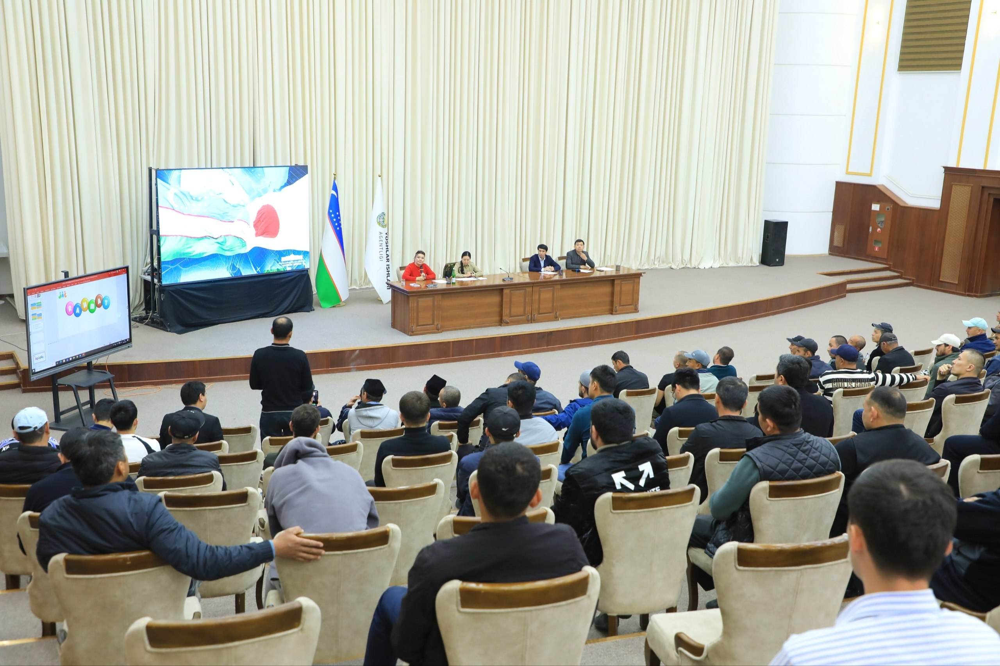
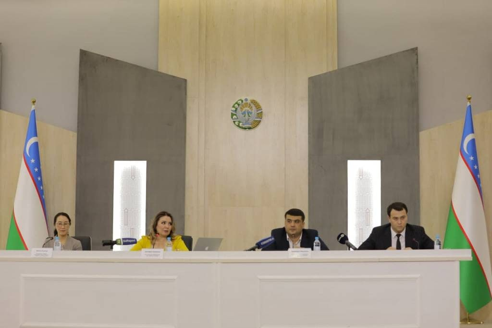

Prezident Farmoni asosida
O'zbekiston Prezidentining farmoni bilan Monosentr (Bandlik markazi) huzurida rasmiy ta'lim faoliyati boshlandi. TDShU bilan davlat darajasidagi hamkorlik shartnomasi imzolandi.
Davlat farmoni
Toshkent Davlat Sharqshunoslik Universiteti huzuridagi rasmiy markaz. Tokutei Ginou (特定技能) tizimi orqali yapon kompaniyalari bilan to'g'ridan-to'g'ri bog'laymiz. Vositachilar yo'q. Yashirin to'lovlar yo'q.
Yillik uzluksiz faoliyat
Bitiruvchilar va imtihondan o'tganlar
Yapon kompaniyalari bilan shartnomalar
Qonuniy | davlat nazoratida
Yapon Tili va Kasbiy Malaka Test Markazi 2018 yildan beri Toshkent Davlat Sharqshunoslik Universiteti huzurida rasmiy faoliyat yuritadi. Biz O'zbekiston va Yaponiya o'rtasidagi kadrlar almashinuvi dasturining rasmiy ishtirokchisimiz.
Markazimiz Yaponiya hukumatining Tokutei Ginou (特定技能) tizimi bo'yicha rasmiy tayyorlov dasturini olib boradi. Biz talabalarni nafaqat imtihonlarga tayyorlaymiz, balki ularga professional kariyera qurishda yordam beramiz. O'quvchilarimiz JFT-Basic va kasbiy malaka imtihonlaridan muvaffaqiyatli o'tib, yapon kompaniyalari bilan to'g'ridan-to'g'ri shartnoma imzolashmoqda.
Bizning faoliyatimiz har ikki davlat idoralari tomonidan nazorat qilinadi. Biz vositachilar bilan ishlamaymiz. Barcha hujjatlar rasmiy va shaffof tarzda tayyorlanadi.

Markazimiz O'zbekiston va Yaponiya hukumat idoralari bilan rasmiy hujjat asosida ishlaydi. Faoliyatimiz milliy va xalqaro OAV vakillari tomonidan muntazam yoritib boriladi.
O'zbekiston Prezidentining farmoni bilan Monosentr (Bandlik markazi) huzurida rasmiy ta'lim faoliyati boshlandi. TDShU bilan davlat darajasidagi hamkorlik shartnomasi imzolandi.
Davlat farmoniSenator Toyama Kyōhiko markazimiz rahbariyati bilan uchrashuvda o'zbek yoshlarining yuqori potentsialini va Yaponiya mehnat bozoriga rasmiy jalb qilish loyihasini qo'llab-quvvatlashini bayon qildi.
Parlament darajasida"Xususiy bandlik agentliklari to'g'risida" qonuni asosida, O'zR Bandlik va Mehnat Munosabatlari Vazirligi nazoratida faoliyat yuritamiz. Davlat jamg'armasiga rasmiy depozit kafolati mavjud.
Davlat litsenziyasi"日本語及び特定技能試験準備センター" yapon tilidagi rasmiy nomi bilan NOU QK sifatida davlat ro'yxatidan o'tkazildi. Direktor: Dilafruz Ikramova.
特定技能 markaziO'zbekistonlik yoshlar yuqori potentsialga ega. Bu yoshlarni demografik inqirozni boshdan kechirayotgan Yaponiyaga malakali mutaxassis sifatida jalb qilish kerak.

25 yillik yapon tili tajribasi bilan O'zbekistonda yaponshunoslik sohasining yetakchi ekspertlaridan biri. Yaponiyaning Yamagata Universiteti (山形大学) professori, jurnalist va xalqaro konsultant. Japan Skill Center markazining asoschisi sifatida 1000+ o'zbekistonlik yoshlarni Yaponiyaga rasmiy yo'l bilan jo'natdi. Davlat idoralari va OAVda muntazam ekspert sifatida ishtirok etadi — "Ibrat farzandlari" (YouTube), MTRK O'zbekiston, O'zbekiston 24 telekanallarida.
「教育は国境を越える橋である」
"Ta'lim — chegaralarni bog'laydigan ko'prik. Yaponiya bizga eshik ochdi, biz esa yoshlarimizga kalit beramiz."

Respublikada ko'plab "yaponiyaga ishga joylashtiramiz" degan tashkilotlar bor. Ularning aksariyati noqonuniy. Biz bu bozorda 8 yildan beri ishlaymiz va bir narsani aniq bilamiz: Yaponiya qonunlari juda qat'iy.
Bizning o'quvchilarimiz real yapon kompaniyalarining vakillari bilan bizning ofisimizda yuzma-yuz suhbatdan o'tadi. Bu suhbatlar yapon tilida olib boriladi. Siz nomzod sifatida emas, balki mutaxassis sifatida baholanasiz.
Ikkinchi mamlakat pasporti, jinoyat tarixi, soxta hujjatlar — bularning birortasi aniqlansa, sizning ishingiz butunlay to'xtatiladi. Yaponiya immigratsiya qonunlari kechirmaslikda dunyo bo'yicha birinchi o'rinda.
Yaponiya hukumatining Tokutei Ginou (特定技能) vizasi orqali xorijiy ishchilarni qabul qiladigan yo'nalishlar.
Beton quyish, armaturachilik, yog'och ishlov berish, bo'yoqchilik. Yaponiyada eng yuqori talab qilinadigan soha.
Keksa yoshdagi yaponlarga g'amxo'rlik. Alohida kaigo imtihoni topshiriladi. Ayollar uchun eng qulay soha.
Restoran, kafe, oziq-ovqat ishlab chiqarish. Yapon oshxona madaniyati va sanitariya qoidalari.
Bog'dorchilik, issiqxonalar, chorvachilik. Mavsumiy va doimiy ishlar mavjud.
Mehmonxona resepsheni, xonalarni tayyorlash, mijozlar bilan muomala. "Omotenashi" tamoyili.
Tokyodagi anime va manga studiyalarida ishlash. JLPT N4+, rassomchilik iqtidori va portfel talab qilinadi.
Yaponiyaning yetakchi IT kompaniyalarida dasturchi (frontend, backend, mobile, DevOps). Engineer/Specialist vizasi. JLPT N3+ va texnik portfel talab qilinadi.
Bu talablar Yaponiya immigratsiya qonunlari asosida belgilangan. Biz ularni yengillashtira olmaymiz.
18 — 35 yosh. Pasport bo'yicha aniqlanadi. Istisno yo'q.
Kamida 9-sinf (o'rta ta'lim). Oliy ta'lim katta ustunlik, lekin shart emas.
JLPT N4 yoki JFT-Basic testidan o'tish. Biz tayyorlaymiz — kurslar doimiy.
Hech qanday jinoyat yoki deportatsiya tarixi bo'lmasligi shart. IIM ma'lumotnomasi talab qilinadi.
To'liq tibbiy ko'rik. Surunkali kasalliklar — rad qilish asosi.
Tanlagan sohangiz bo'yicha yapon kasbiy malaka testidan o'tish.


Har bir qadam shaffof. Har bir hujjat rasmiy. Yashirin to'lov mavjud emas.
 STEP 01
STEP 01Telegram orqali murojaat qilasiz. Holat va eng mos yo'nalish aniqlanadi.
STEP 023–6 oy ichida JLPT N4 / JFT-Basic darajasiga yetib borasiz.
STEP 03Tanlagan sohangiz bo'yicha rasmiy yapon testdan o'tasiz.
STEP 04Yapon ish beruvchilar ofisimizga kelib, suhbatni yapon tilida o'tkazadi.
 STEP 05
STEP 05Shartnoma imzolanadi. Hujjatlar Yaponiya immigratsiyasiga rasman topshiriladi.
STEP 06Chipta, turar joy, ish joyi — tayyor. Aeroportgacha kuzatib qo'yamiz.
Quyidagi hujjatlar bizning talabalarimizning haqiqiy imtihon natijalari. Har bir sertifikat Yaponiya hukumati tomonidan rasmiy berilgan.


Eng ko'p so'raladigan savollarga aniq, ochiq javoblar. Yana savol bo'lsa — Telegram orqali yozing.
Yana savol bormi? Bepul konsultatsiya oling →
Tashkil etilgan kundan boshlab hozirgi kungacha — markazimiz bosib o'tgan tarixiy yo'l.
Yapon tili ta'lim faoliyati "Fuji Inter Study" nomi ostida boshlandi. O'zbekiston va Yaponiya o'rtasida ta'lim va ish ko'prigi qurishning birinchi qadam qo'yildi.
O'zbekiston Prezidentining farmoni asosida Monosentr (Bandlik markazi) ichida rasmiy ta'lim faoliyati boshlanadi. TDShU bilan hamkorlik shartnomasi imzolanadi. Nippon Academy (Yaponiya) bilan birinchi bitim tuziladi.
Toshkentda tajriba Monosentri ochildi. Tokutei Ginou (特定技能) imtihonlari uchun birinchi talabalar ro'yxatga olindi. Kasbiy malaka kurslari tizimi to'liq ishga tushirildi.
"日本語及び特定技能試験準備センター" (Yapon Tili va Kasbiy Malaka Test Markazi) NOU QK sifatida rasmiy ro'yxatdan o'tkazildi. Direktor: Dilafruz Ikramova. 464 ta talaba yapon tilini o'rganishni boshladi. Butun O'zbekiston bo'ylab 14 ta Monosentr faoliyat yurita boshladi.
Monosentrlar soni 16 taga yetdi. Birinchi bitiruvchilar Tokutei Ginou imtihonlarini muvaffaqiyatli topshirdi — Kaigo va Qishloq xo'jaligi yo'nalishlarida. Prezident Monosentrga ikkinchi marta rasmiy tashrif buyurdi. Samarqandda 2-Mehnat Forumi o'tkazildi. Nippon Academy (Gunma, Yaponiya) bilan rasmiy hamkorlik shartnomasi imzolandi.
Anime va IT sohalari qo'shildi. Jami 5,000+ talaba va bitiruvchi. Toshkent ofisida yapon kompaniyalari vakillari bilan muntazam yuzma-yuz suhbatlar tashkil etildi. 60 dan ortiq yapon kompaniyalari bilan rasmiy shartnomalar imzolanmoqda.
O'zbekistonning yetakchi yapon tili ta'lim va ishga joylashtirish markazi sifatida faoliyat yuritmoqda. 5,000+ bitiruvchi, 60+ yapon kompaniya hamkori, 100% qonuniy tizim.
Davlat muassasalari va Yaponiyaning yetakchi ta'lim/biznes tashkilotlari bilan 8 yillik rasmiy hamkorlik.


Markaz TDShU huzurida 2018-yildan beri faoliyat yuritadi. Yaponshunoslik fakulteti bilan ilmiy hamkorlik. tsuos.uz ↗

Yaponiya hukumatining xalqaro hamkorlik agentligi. O'zbekiston bilan ta'lim va kadrlar tayyorlash sohasida rasmiy bog'liqlik. jica.go.jp ↗

JFT-Basic va JLPT testlarining rasmiy tashkilotchisi. Yapon tili va madaniyatini xalqaro tarqatish bo'yicha asosiy organ. jpf.go.jp ↗


Maqsadingizga mos yo'nalishni tanlang — biz bepul konsultatsiya bilan bog'lanamiz. Telegram orqali zudlik bilan javob beramiz.
Tokutei Ginou (特定技能) tizimi orqali yapon kompaniyasida halol ish.
02 / KursJFT-Basic / JLPT N4 + maxsus soha imtihoniga to'liq tayyorgarlik.
03 / KonsultatsiyaBepul konsultatsiya — sizga eng mos darsni biz tanlab beramiz.
04 / BeginnerHech qanday tajribasiz boshlang. Hiragana → JLPT N4 darajasiga.
Ma'lumotlaringizni qoldiring — tez orada bog'lanamiz.